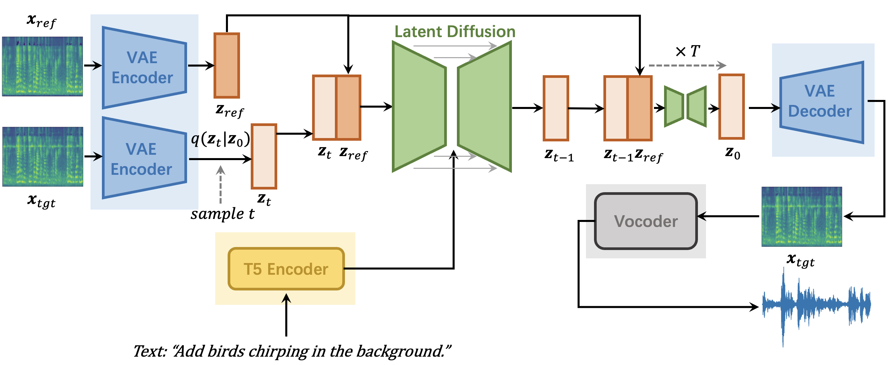

AUDIT:
Audio Editing by Following Instructions with Latent Diffusion Models
Abstract.
Audio editing aims to modify reference audio in line with human expectations to obtain target audio, which has a wide range of applications (e.g., repairing damaged audio, enhancing audio resolution, adding background sound effects).
Recently, some methods based on adding noise to the reference audio through diffusion models and then using the description of the target audio to guide denoising have achieved good results. However,
these methods still have some problems: 1) there is a mismatch between the inference process of audio editing and the training objectives of the text-to-audio diffusion models; 2) these methods cannot guarantee that the parts that do not need to be modified will not be edited;
3) a complete description of the target audio is not always available in practical scenarios. In this work, we propose \textbf{AUDIT}, a text-guided audio editing model based on the latent diffusion model. Specifically, the designs of our method includes: 1) we design human instruction templates for different editing tasks and generate paired training data based on these templates,
we train a diffusion model with reference audio and instructions as conditions to solve the inconsistency problem between training and inference; 2) since the reference audio directly serves as a condition of the model during the training stage, the model needs to automatically learn to ensure that the parts that do not require editing remain consistent before and after editing;
3) our model only requires instructions as text input, without the need for a description of the target audio. Our methods achieves state-of-the-art results in both objective and subjective metrics (e.g., LSD, KL, FD) for several text-guided audio editing tasks.
This page is for research demonstration purposes only.
Model Overview

A high-level overview of our text-guided audio editing model. The audio autoencoder (VAE), the T5 encoder and the vocoder are pretrained models and frozen in this framework.
Inpainting Samples
The audio inpainting task is to complete a masked segment of an audio based on the context or provided textual description. SDEdit-Rough and SDEdit-Precise are two baseline methods, you can check more details in our paper.
| Text | Reference Audio | SDEdit-Rough | SDEdit-Precise | Ours |
|---|---|---|---|---|
| A bell ringing followed by a clock ticking while a baby crying far away | ||||
| Whistling with birds chirping | ||||
| A woman speaking with drum beat and raining in the background | ||||
| A group of people are laughing | ||||
| A person types on a keyboard | ||||
| A person repidly types on a keyboard | ||||
| A toilet flushing | ||||
| An electronic device buzzing followed by a woman talking | ||||
| A sudden horn | ||||
| A baby cries followed by rustling and heavy breathing |
Super-resolution Samples
The audio super-resolution task can be viewed as completing the high-frequency information of a low-sampled reference audio (converting the low-sampled reference audio into a high-sampled target audio).
| Text | Reference Audio | SDEdit | SDEdit-Precise | Ours |
|---|---|---|---|---|
| A baby cries and a young girl speaks briefly | ||||
| A car is shifting gears | ||||
| A birds chirping as water lightly trickles and splashes | ||||
| Gunfire sounds | ||||
| Continuous crinkling in a quiet environment |
Adding Samples
The adding task is to add another sound event to the reference audio. For instance, transforming a reference audio with the caption "A baby is crying" into a target audio with the semantic information "A baby is crying while thundering in the background." It is important to note that the adding task should not only ensure that the generated target audio contains both the semantic content of the reference audio and the newly added semantic content, but also that the content of the reference audio should remain as unchanged as possible in the target audio.
| Text | Reference Audio | SDEdit (N=1/2T) | SDEdit (N=1/4T) | Ours |
|---|---|---|---|---|
| Add clip-clop of horse hooves | ||||
| Add a motorboat speeding in the background | ||||
| Add a motorboat speeding in the background | ||||
| Add the sound of knocking in the middle | ||||
| Add a bell in the beginning | ||||
| Add a car horn honks several times loudly nearby in the background | ||||
| Add a short sound of hi-hat in the end | ||||
| Add: bowed string instrument in the middle |
Dropping Samples
The dropping task aims to remove one or more sound events from the reference audio. For example, removing the sound event "dog barking" from a reference audio with the caption "A man giving a speech while a dog barking" to a target audio with the semantic description "A man giving a speech".
| Text | Reference Audio | SDEdit (N=1/2T) | SDEdit (N=1/4T) | Ours |
|---|---|---|---|---|
| Drop the sound of a duck quacking in water | ||||
| Drop people speaking | ||||
| Drop: bell rings repetitive chiming sounds | ||||
| Drop: water gurgles from a spout | ||||
| Drop the sound of dishes and pots and pans in the middle | ||||
| Drop: pouring water | ||||
| Drop people cheering | ||||
| Drop: a woman talking | ||||
| Drop a short firework explosion in the end |
Replacement Samples
The replacement task aims to substitute one sound event in a reference audio with another sound event. For example, replacing the sound event "bell ringing" with "fireworks" in an audio with caption "the sound of gun shooting and bell ringing" results in a target audio with the semantic description "the sound of gun shooting and bell ringing and fireworks".
| Text | Reference Audio | SDEdit (N=1/2T) | SDEdit (N=1/4T) | Ours |
|---|---|---|---|---|
| Replace: wind instrument to drum kit | ||||
| Replace dropping coin with the sound of something tearing | ||||
| Replace: laughter to trumpet | ||||
| Replace the sound of squeak to the sound of clapping | ||||
| Replace clink with fart |
Text-to-Audio Generation
Since we compare with generative model-based audio editing baseline methods, we also train a text-to-audio latent diffusion model. Our model achieves the best performance in three objective metrics, FD, KL, and IS, and only uses AC and a subset of AS96 as training data. Compared to the previously best-performing model (AudioLDM), our model reduces FD by 3.12 (23.31 to 20.19), KL by 0.27 (1.59 to 1.32), and increases IS by 1.10 (8.13 to 9.23). This demonstrates that our generation model can serve as a strong baseline model for generation-based editing methods.
| Text | Our Text-to-Audio Model |
|---|---|
| Water flowing down a river | |
| A horse galloping | |
| A person snoring | |
| A woman giving a speech while group of people applauding | |
| A young girl giving a speech while group of people applauding | |
| A speedboat running as wind blows into a microphone | |
| Birds singing while ocean waves crashing | |
| Jazz music | |
| Opera music | |
| Someone typing on a computer | |
| Thunder as rain falling down | |
| Wind blows and insects buzz while birds chirp | |
| Train passing and a short honk |